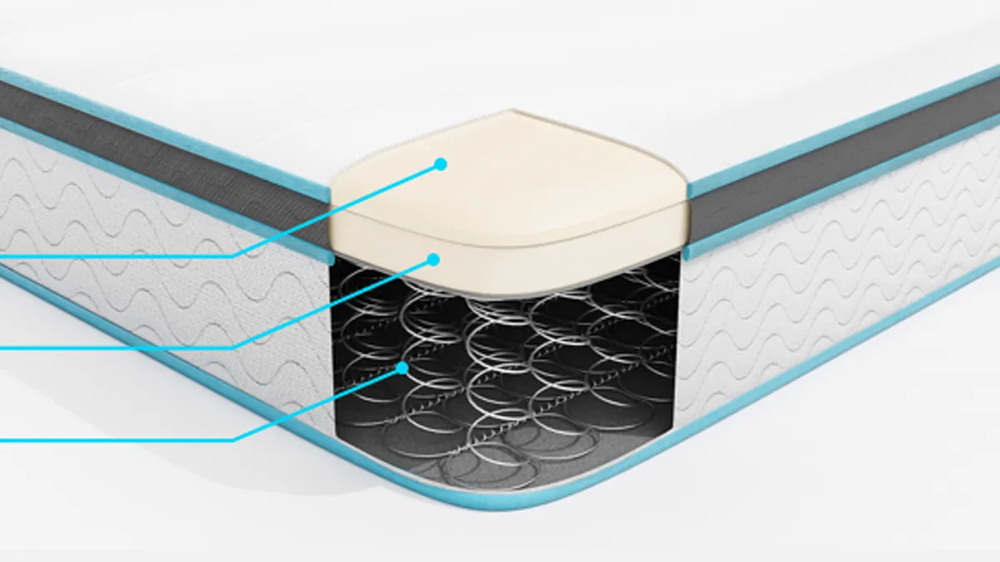
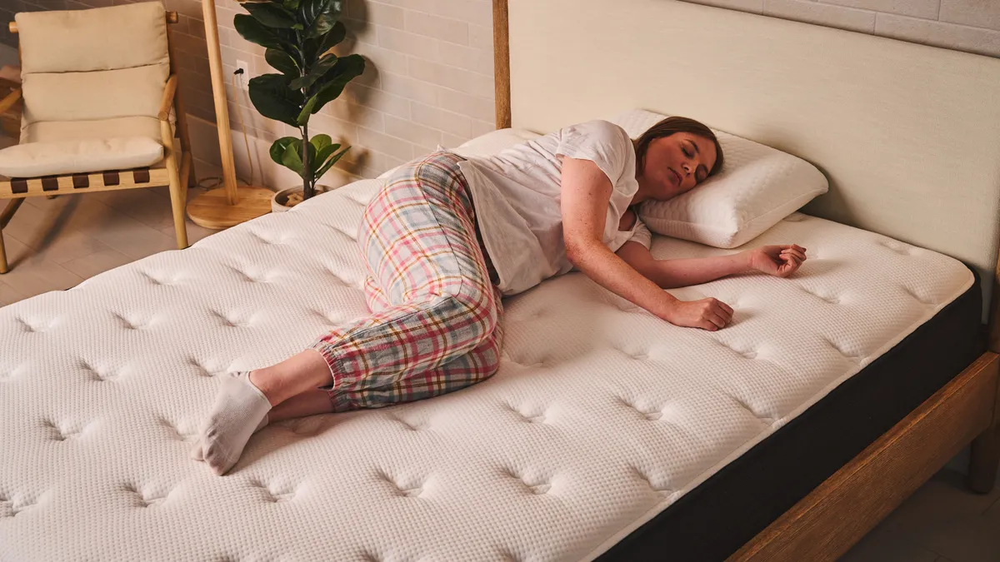

Getting the right mattress can transform your sleep. Here’s how to make the right choice for your first mattress.
There’s a reason why this tip comes first, and that’s because your sleep needs often determine what mattress type you’ll need (more on that below), and how much you’re likely to have to spend. ‘Sleep needs’ is a term that essentially describes everything you need from your mattress in order to sleep well
To help establish what those needs are, think carefully about your current mattress. What does your current mattress do well? What does it not do that you wish it did?
You might experience back or joint pain and therefore require a mattress with soothing pressure relief and enhanced lumbar support. You might be prone to overheating (regardless of the season) and need a mattress infused with cooling technology. Or, perhaps you’d like to be able to sit on or sleep right up to the bed’s edge without feeling as though it’s collapsing beneath you, in which case you’ll require a bed with sturdy edge support.
Being clear on what you need from your mattress will immediately help narrow down your search, placing you one step closer to the mattress of your dreams
There are four main mattress types to choose from and deciding which type is right for you ultimately comes down to your sleep needs and comfort preferences. The main mattress types are:
Hybrid: A hybrid mattress is a type of mattress crafted from a combination of coils and foam; the coils provide the mattress’s support system while the foam above provides the mattress’s comfort. The open structure of a hybrid's coil system means better airflow throughout the bed, which usually means they provide reliable temperature regulation. The best hybrid mattresses are more responsive than their all-foam counterparts, which means they're a good option for those who like to shift positions throughout the night.
Memory foam mattress: Instead of springs, all-foam mattresses rely on dense layers of foam for their support. Up top, you'll find softer foams that tend to contour to the body while you sleep, providing a typical memory foam 'hug.' While these layers of foam might make it it harder than hybrids to move around on, they are excellent at dampening movement and isolating motion, making them a great option for those who share a bed. But be warned, even the best memory foam mattresses have a tendency to retain a little heat.

Innerspring: Innerspring mattresses are similar in design to hybrid mattresses, in as much as they rely on coils for support. However, traditional innerspring mattresses typically only have a thin layer of padding up top, which means they can be fairly bouncy (which isn't ideal for anyone who shares a bed) and provide less body contouring.At ReviewSphere, we'll always advise that you spend what you can on a mattress as a mattress that is truly right for you will improve your sleep quality and duration, which then has an enormous knock on effect on your overall health and wellbeing. But that doesn't mean that you have to spend a fortune on a new mattress if you don't have it.
You'll always be able to pick up a mattress for less than £300 for a double, especially if you're shopping during a major sale. However, you will have to make certain concessions when buying a mattress within this price category. Durability, overall comfort and decent industry benefits, such as sleep trials and warranty periods, are often called into question.
While it is a lot of money, increasing your budget to between £400 and £600 for a double, which is considered mid-range, does mean a big jump in quality. Upper mid-range mattresses cost in the region of £800, which is where beds with specialist features, such as advanced cooling or organic materials, usually sit. Then there's premium priced mattresses, like the Simba Hybrid Ultra (which takes the top spot in our best mattress guide) but costs an eye-watering £2,799 for a double at full price. Expensive, but worth it if you're looking for a 10/10 mattress.
You've likely never given it much thought until now, but the position that you spend most time sleeping in will have a direct impact on the mattress type and firmness that you need. Those who predominantly sleep on their side require a mattress with a little bit of sink in support to ensure that their shoulders, hips and knees are comfortably cradled.
Memory foam mattresses are some of the best mattresses for side sleepers, thanks to their body contouring support. However, memory foam mattresses do have a tendency to sleep warm. Hybrid mattresses, with their deep comfort layers and open coil support system, often provide the sought-after combination of pressure relief and temperature regulation that side sleepers require.

In contrast, back and stomach sleepers require a slightly sturdier sleep surface to ensure that their back is held in correct alignment with the rest of their body when sleeping. However, it will still need to provide a certain amount of cushioning in order to avoid a buildup of pressure in the lower lumbar region.All mattresses are rated out of 10 for firmness. What mattress firmness you need will depend largely on your sleep position and body type. Medium-firm mattresses, which have a firmness of 6-7 out of 10, tend to suit most types of sleepers.
However, lighter bodies (those weighing approximately 9st or lighter) will require something a little softer, while those weighing approximately 17st or heavier will require a mattress with sturdier support, and should look for a mattress with a firmness rating in the region of 8 out of 10.
Depending on your weight, those who sleep on their sides will usually require a medium-firm mattress with plenty of pressure relief, while back and stomach sleepers will need something slightly firmer to ensure that their spine is held in correct alignment as they sleep.